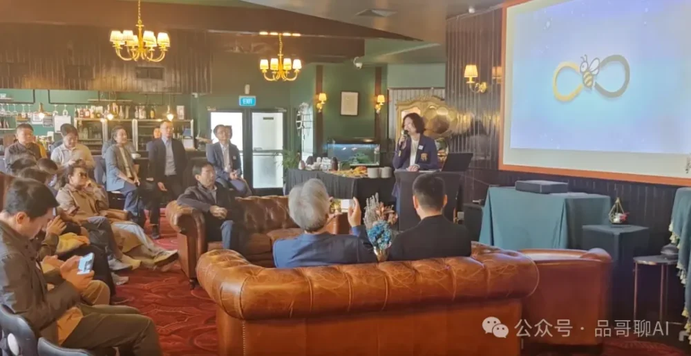

01 · 工作与自动化
从重复工作开始。
邮件整理、日程协调和信息检索，是 OpenClaw 实操工作坊讨论的真实场景。先列出一个反复出现的任务，再关注需要哪些资料、权限与人工确认，不急着让 AI 接管整个流程。

不必一次追完所有工具。下面三条阅读路线来自先蜂会已举办的活动，先选一个与你有关的问题，再判断是否需要进一步交流或动手实践。
邮件整理、日程协调和信息检索，是 OpenClaw 实操工作坊讨论的真实场景。先列出一个反复出现的任务，再关注需要哪些资料、权限与人工确认，不急着让 AI 接管整个流程。
PPT 与公众号内容工作流回顾展示了从单次对话到分工协作的思路。可以带着自己的一份材料来理解流程，重点看资料如何组织，以及哪些判断仍须由人完成。
AI 与孩子成长的讨论从好奇心、同理心、意志力、审美和亲缘关系出发。它不是编程课，而是帮助家长思考：使用 AI 后，哪些真实经历仍值得亲自参与。
先蜂会委员会成立于 2026 年 3 月 21 日，5 月 4 日在奥克兰举办创会活动。这两个日期分别对应组织筹备和公开活动，不应混为同一天。
创会会长为周品（Pin），常务副会长为张彤（Ally）。白皮书列有七位创始委员及组织分工，说明会员机制、资金使用与对外合作边界。查看治理机制与组织架构。
活动按主题邀请不同分享者。Fred Zhang、Harry Zheng 主讲了 OpenClaw 工作坊；周品、路峰、王咏刚等参与过不同主题的分享或对谈。每期活动页独立标注主讲与嘉宾，不把出席活动等同于俱乐部任职。
外部报道：天维网于 刊登《NewBee（先蜂）AI俱乐部在新西兰成立》，记录了创会活动。该报道是活动资料来源，不代表媒体对会员服务效果作出保证。
以下信息来自本站正式活动页；日期、主题和活动形式均可沿链接核对。
两桌会员共同观察新西兰创新项目、资本与青年教育现场。
围绕 PPT 与公众号内容工作流的线上实操 Workshop。
在奥克兰现场完成安装配置，并演示 AI 自动化协作。
公开回顾可以直接阅读。目前普通会员年费为 1,299 NZD，申请需审核；单场活动资格和费用依当期安排确认，不默认每场活动都免费或向所有人开放。
如果你想参加本地聚会，先读奥克兰 AI 俱乐部参与指南，核对历史场地、活动类型和第一次出发前需要确认的事项。
先蜂会曾举办线上内容工作流工作坊。并非每场线下活动都同步直播，请通过 office@new-bee.club 确认下一期是否有线上安排与具体时区。
NewBee AI Club（先蜂AI俱乐部、先蜂会）是一个立足新西兰、以奥克兰为主要线下活动基地的华人 AI 学习与实践社群，也通过线上活动连接其他城市和海外参与者。
公开活动包括 AI 主题讲座、实操工作坊、会员活动日、读书与案例讨论、工具交流和社区共创。活动档案提供日期、主题与回顾。
可以关注线上讲座与线上工作坊。线下活动目前以奥克兰为主要基地，具体形式、日期与地点以官方活动页为准。
可以从与自己有关的主题开始，例如内容制作、亲子教育或日常工作。安装与配置类工作坊可能需要电脑和准备工作；请先阅读活动说明，再确认是否适合自己的基础。
普通会员年费为 1,299 NZD，申请需经俱乐部审核。网站上的活动回顾可以公开阅读；单场活动资格、费用和报名要求以当期公告及俱乐部确认为准，年费不等于单场票价。
可通过官方邮箱 office@new-bee.club 咨询会员计划、活动或合作。
发布方：NewBee AI Club 先蜂会 · 最后核对：。本页为官方参与指南，不是全新西兰 AI 社群排名或名录。活动事实见所链接的原始回顾；发现资料问题，可联系 office@new-bee.club。
公开档案比口号更能说明这个社群如何学习、实践和复盘。